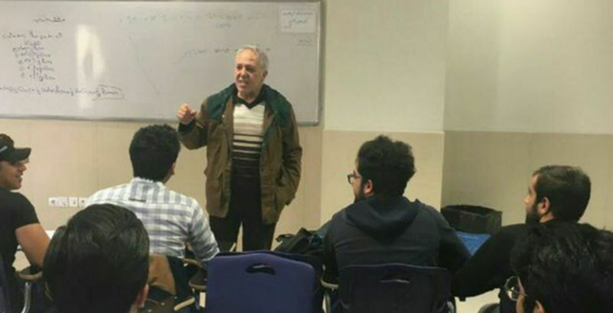

Having taught at different academic centers and schools and Universities for over twenty years, I have
developed a wide range of skills that would meet, and exceed the expectations for the role. In my present
role as a University Professor for Azad University of Tehran, Iran, I have had many achievements, including
more than fifteen articles published in scholarly journals and numerous international conference
presentations and a few published books.
Would relish the opportunity to bring this level of success to your University. If you would like to get in
touch to discuss my application and to arrange an interview, you can contact me.
Education
- PhD in Mathematics (Complex Analysis)
Pune University, Pune,
India (2002-2005)
Thesis Title:
Study of Some Recent Topics in Holomorphic Functions Theory
Supervisor: Professor S.R. Kulkarni
- MSc in Mathematics (Fuzzy Algebra)
Tarbiyat Modarres University (TMU),
Tehran, Iran (1992-1994)
Thesis Title: Multiple Boolean Algebra and Their Application to Fuzzy Sets
- BSc in Mathematics Teaching
Birjand University, Birjand, Iran (1987-1991)
- General Arts and Science
Gorge Brown College, Toronto, Canada (2014-now)
Teaching Experience
- Lecturer (1998-2019)
Islamic Azad University of Tehran, Iran
- Invited Professor (1992-1998)
Universities in Tehran, Iran
- Math Teacher (1991-1992)
Mashhad High School, Iran
- Teaching Assistant (1989-1991)
Ferdowsi University in Mashhad, Iran
- Private Tutor (2013-now)
Tutoring and private class for students in Universities in
Toronto and students in high schools in Toronto.
- Math Teacher (2015-2018)
Pascal Academy in Toronto
Teaching Courses
- Undergraduate Courses:
Calculus (I & II & III), Analysis (I, II), Ordinary
Differential Equations
- Graduate Courses:
Analysis III, Real Analysis, Complex Analysis
Awards
Research Interests
- Geometric Functional Analysis ,Complex Analysis, Harmonic Analysis, Functional Analysis ,Fuzzy
Mathematics
Published Papers
- A characterization of 2-primal and NI rings over skew inverse Laurent series rings, Journal of Algebra
and Its Applications, 1950221, 2018.
- Some results on skew Hurwitz series rings, Rendiconti del Circolo Matematico di Palermo Series 2, 1-9,
2018.
- Study of Neighborhoods and Fractional Calculus of Univalent Functions on new class by Using Komato
Operator, Journal of Advances in Mathematics (JAM), 2014.
- On a Class of Holomorphic Function, Journal of Science and Arts, No. 2(23), pp. 141-150, 2013
- Study on Integral Operators by Using Komato Operator on A New Class of Univalent Functions, Journal of
Mathematics Research,in Canada, 3(4)(2011), 67 – 74
- Radius of Starlike and Partial Sum Property for Holomorphic Functions Defined by Komato Operator, J.
Acta Universitatis Apulensis in Romani, (27)(2011), 243 – 252
Papers Presented at Conferences
- On a subclass of Monomorphic Multivalent Function Associated with salagean Operator, International Multi
Conference of Engineers and Computer Scientists (IMECS 2011)., 16-18 March, 2011 Hong Kong
- A Class of Univalent Function Many Coefficients With Fixed Finite, International Conference On Applied
Analysis and Algebra (ICAAA2011)" 29-30 June and 1-2 July 2011 in Istanbul, Turkey
- Subclass of a-Uniformly Starlike and Convex p-valent Functions in Terms of Fractional Derivative of f(z)
of order delta, International Conference on Functional Equations, Geometric Functions and
Applications(ICFGA2012),10-12th May 2012, Payame Noor University, Tabriz, Iran
Books
- Introduction to Cryptography
- Ordinary Differential Equations
- Calculus I
- Calculus II